Shakshuka express
Sauve 3 aliments100 %
Un flash. Trois recettes. Zéro gâchis. Le jaune éclair porte la marque, l’encre la structure, la menthe dit « sauvé » et le corail dit « vite ». Tout ce qui est montré ici est dans tokens.css et components.css.
Un frigo en deux portes dont la poignée est un éclair, avec les rayons d’un flash d’appareil photo. Six formes, lisible à 16 px. Zone de protection : la largeur d’un rayon × 2 (≈ ¼ de la hauteur du symbole) tout autour. Taille mini : symbole 16 px, logo horizontal 96 px de large.
logo/logo-horizontal.svglogo/logo-horizontal-negatif.svg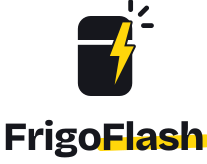
logo/logo-vertical.svglogo/logo-horizontal-mono-encre.svglogo/logo-horizontal-mono-blanc.svglogo/symbole.svglogo/symbole-negatif.svg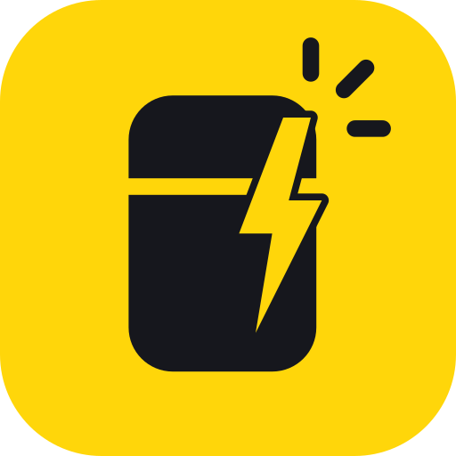
logo/icone-app.svg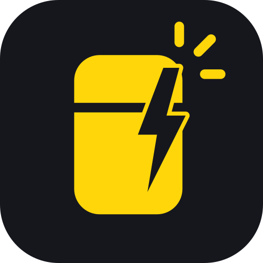
logo/icone-app-sombre.svglogo/favicon.svglogo/symbole-mono-encre.svglogo/symbole-mono-blanc.svgRègle d’or : du texte encre sur le jaune, jamais blanc. Le jaune occupe au plus ≈ 15 % d’un écran : un bouton, un surlignage, un chiffre. L’urgence n’est jamais portée que par la couleur : corail + sablier + « À manger vite ».
| Exemple | Paire | Ratio | AA |
|---|---|---|---|
| Sauve 3 aliments | Encre sur jaune | 12.67:1 | ✅ AA |
| Sauve 3 aliments | Encre sur crème | 16.94:1 | ✅ AA |
| Sauve 3 aliments | Menthe texte sur menthe clair | 4.56:1 | ✅ AA |
| Sauve 3 aliments | Corail texte sur corail clair | 4.99:1 | ✅ AA |
| Sauve 3 aliments | Jaune texte sur jaune clair | 5.45:1 | ✅ AA |
| Sauve 3 aliments | Gris texte sur blanc | 6.86:1 | ✅ AA |
| Sauve 3 aliments | Jaune sur encre | 12.67:1 | ✅ AA |
| Sauve 3 aliments | Blanc sur jaune (INTERDIT) | 1.41:1 | ❌ échec |
Barres à coins arrondis (10 px), sans contour, valeur au-dessus, période en cours hachurée encre sur jaune.
Bricolage Grotesque (titres, chiffres) : grotesque expressive, un peu « faite main », gourmande sans être enfantine. DM Sans (texte) : très lisible en petit. Les deux sont embarquées en woff2 dans fonts/ (licence OFL) pour marcher hors ligne en file://. Chiffres d’impact en tabular-nums.
Lucide 0.460 (ISC), trait 2 px, 24 px, embarquées dans icons/icons.js : <i data-icon="zap"></i>. Trait 2,4 dans les pastilles pleines. Ingrédients : emoji + nom en texte (🥒 courgette).
housezapchart-no-axes-columncameraimage-upclockchef-hatheartcheckxplusleafhourglassflameeurocloudutensilsshopping-basketchevron-leftchevron-rightsliders-horizontalsettingsrotate-ccwsparklesshare-2lockinfotrophytimerplayrefrigeratorsearchFlat, contour encre 3 px, couleurs de la palette, aucune photo. Le sablier corail sur un aliment = « à manger vite ». Les visuels recettes sont des assiettes vues du dessus sur fond jaune clair, menthe clair ou corail clair, avec les rayons du logo en rappel.
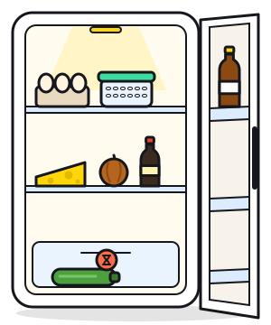
frigo-etudiant.svg
frigo-dimanche.svg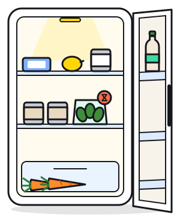
frigo-vege.svg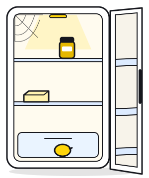
frigo-vide.svg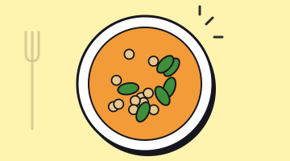
curry-pois-chiches-epinards.svg
galettes-riz-croustillantes.svg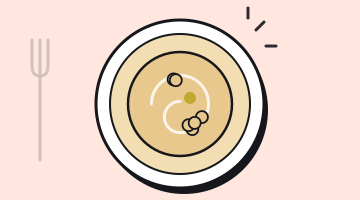
houmous-minute.svg
omelette-courgette-fromage.svg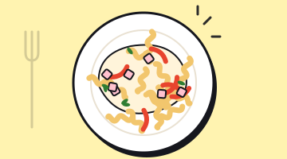
pates-cremeuses-jambon-poivron.svg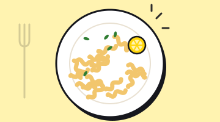
placard-pates-beurre-citron.svg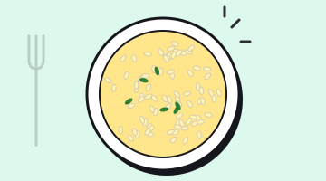
placard-riz-moutarde.svg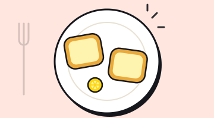
placard-tartines-beurre-citron.svg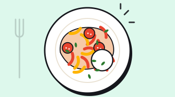
poivrons-tomates-rotis-yaourt.svg
riz-saute-oeufs-courgette.svg
salade-carottes-feta-citron.svg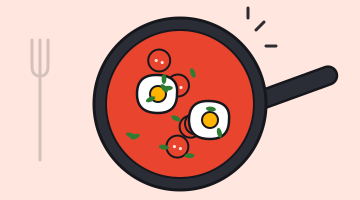
shakshuka-express.svgCourbes : --ease-out cubic-bezier(.22,1,.36,1) pour les entrées, --ease-spring cubic-bezier(.34,1.56,.64,1) pour les rebonds, --ease-in-out cubic-bezier(.65,0,.35,1) pour les déplacements. Avec prefers-reduced-motion, tout passe à 0 ms et la ligne de scan reste fixe.
| Moment | Durée | Courbe | Ce qui se passe |
|---|---|---|---|
| Splash : éclair | 0 → 600 ms | --ease-out | Le symbole apparaît, flash blanc plein écran (opacité 0,95 → 0), puis l’accueil |
| Tap bouton Flash | 120 ms + 600 ms | --ease-spring | Enfoncement 4 px (ombre dure qui disparaît) + .is-flashing (voile blanc qui s’éteint) |
| Feuille « Choisir un frigo » | 360 ms | --ease-out | translateY(100 %) → 0, fond assombri en fondu 220 ms |
| Scan (E4) | 1,6 s alterné, ~3 s au total | --ease-in-out | Ligne jaune lumineuse qui balaie la photo, messages qui changent toutes les 900 ms |
| Révélation des 3 recettes | 360 ms, décalage 120 ms | --ease-spring | translateY(24 px) scale(.96) → normal, une carte après l’autre |
| Chips ingrédients | 220 ms, décalage 40 ms | --ease-out | Apparition en cascade ; retrait = barré + pointillés, pas de suppression brutale |
| « J’ai cuisiné ça ! » | 1,2 s | --ease-out | Confettis jaune / menthe / corail / encre (≈ 60 particules) + toast « +650 g sauvés » |
| Compteurs d’impact | 800 ms | --ease-out | Le chiffre monte de l’ancienne à la nouvelle valeur (chiffres tabulaires : rien ne saute) |
Les trois écrans clés en HTML statique 390 × 844, construits uniquement avec les tokens et les composants. Les autres écrans (E0, E1, E3, E4, E5, E7) se construisent avec les mêmes briques.
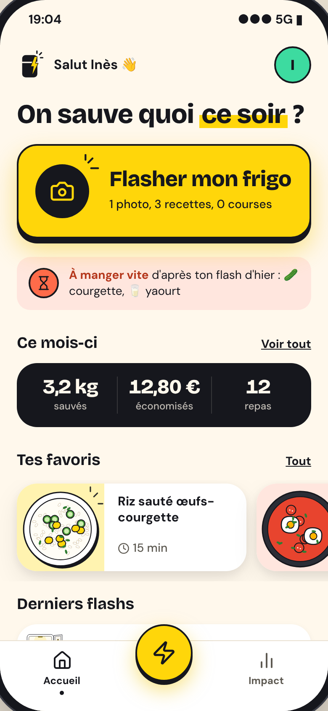
maquettes/E2-accueil.html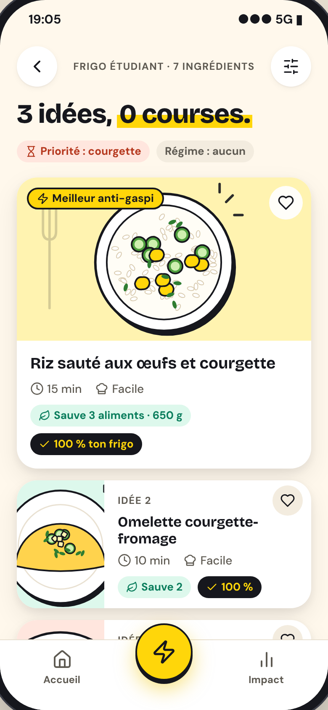
maquettes/E6-recettes.html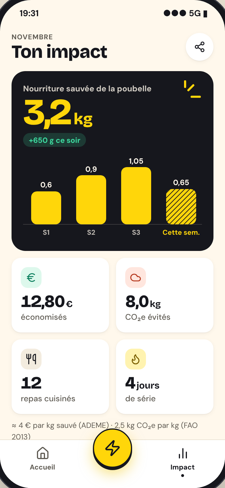
maquettes/E8-impact.html